马尔可夫链(Markov Chains)&隐马尔可夫模型(HMM)
马尔可夫链(Markov Chains)
马尔可夫链的核心三要素：
- 状态空间 States Space
- 无记忆性 Memorylessness $P(S_t|S_{t-1},S_{t-2},S_{t-3},……)=P(S_t|S_{t-1})$
- 转移状态矩阵 Transition Matrix
=> 独立性并非均值收敛的必要条件，即使非独立的随机过程也能收敛至稳态；
一个简单的示例：
早餐店每天提供一种不同的早餐 汉堡、披萨、热狗；它们在每一天出现的概率可以由一个状态转移矩阵来表示：
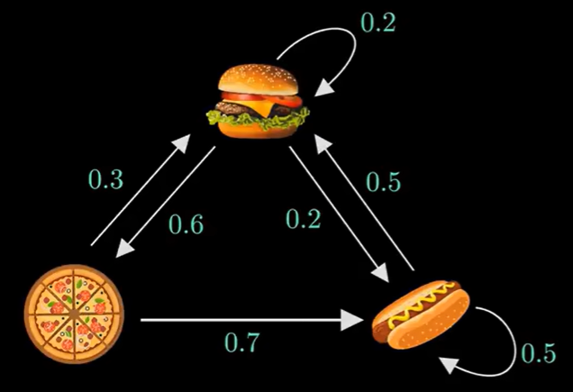
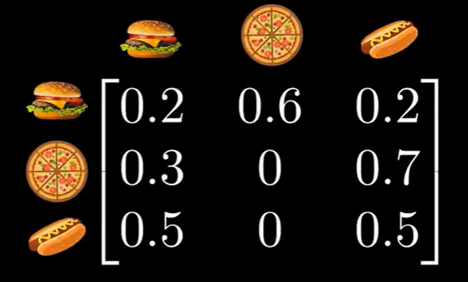
用一个行向量来表示当前的状态概率分布：
假设当天是食物 披萨 ：$\pi_0=\left[\begin{array}{ccc}0&1&0\end{array}\right]$；
通过以下方式可以逐步求出第二、三、四……天的状态概率分布；（即 第一天的状态概率分别 X状态转移矩阵 ^ n = 第 n+1 天的状态概率分布)
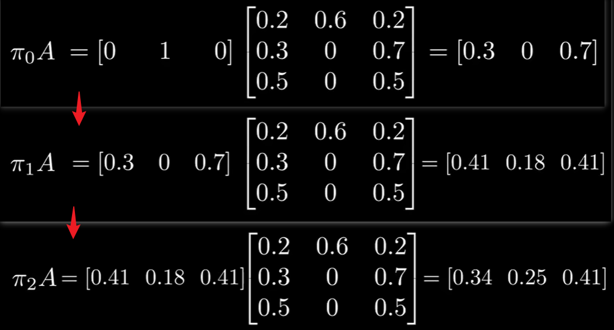
【如果存在一个稳态，那么在某个点后，输出的行向量应该与输入的行向量完全相同。】
最终会达到一个稳态分布（即一个固定的行向量），这里用 $\pi$ 来表示；则会有 $\pi A=\pi$ ；（与特征向量的等式类似 $Av=\lambda v$；求解过程即这里的特征值为 1 ，$\pi[1]+\pi[2]+\pi[3]=1$；）
这里最终求解出 $\pi=[\begin{array}{ccc}0.35211&0.21127&0.43662\end{array}]$；
寻找是否存在多个稳态，即只需要查看是否存做多个特征值为 1 的特征向量。并不是所有的马尔科夫链都是具有唯一的稳态分布；如下图 B、C 旁边的两个向量均为该链的稳态分布；
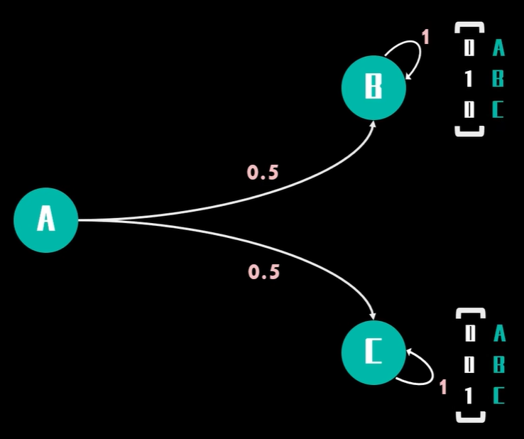
稳态分布并不依赖于开始的状态（因为这是整个马尔可夫链的属性）
可约链与不可约链
可以从任何一个状态到达其他任何状态的链，即不可约链；反之则为可约链（可以将该链分割从而转化为更小的不可约链）；（从其他状态无法回到当前状态的一个状态可将其分割）
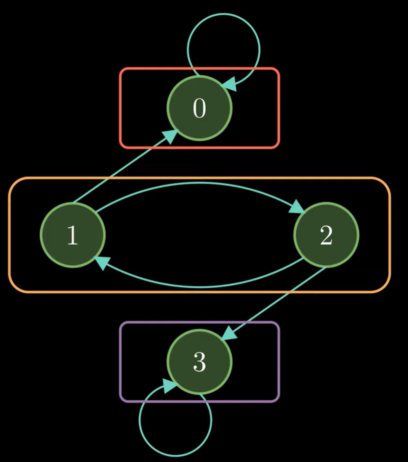
例如上面这个马尔可夫链可分为三个类，即通信类（任何状态都可以到达其他的状态）；
推广至 n 步/ n 阶转移矩阵
示例：
求解在经过 2 步后从状态 0 转移至状态 2 的概率；
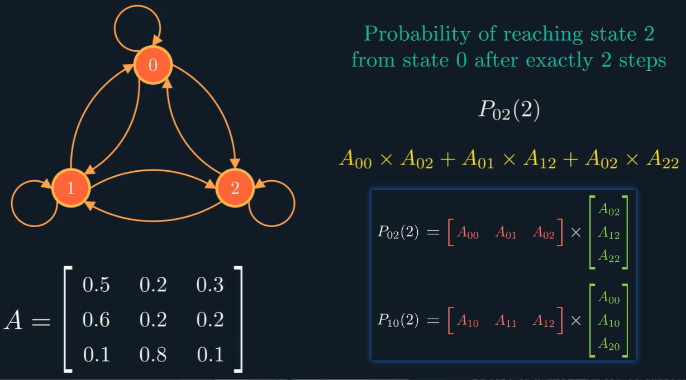
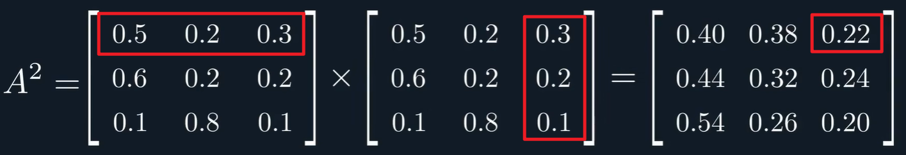
由此推广至 n 步/ n 阶转移矩阵；
找到在 n 步转移中从状态 i 到状态 j 的概率，只需要看 n 阶转移矩阵的第 i行和第 j 列的就行了；
以第一个例子中的 A 状态转移矩阵为例，其最终的稳态分布：
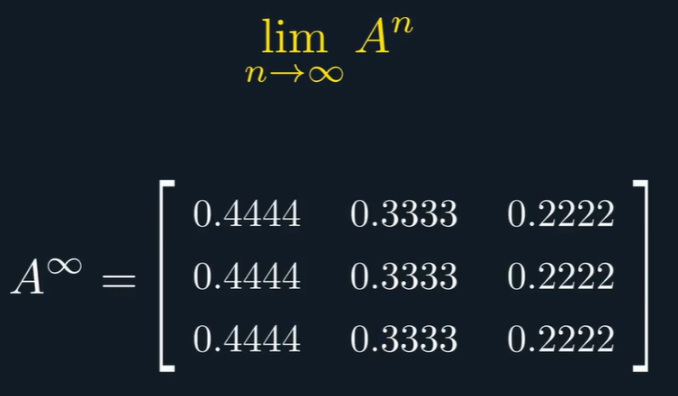
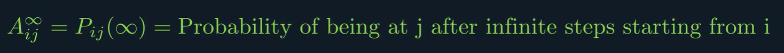
只有满足一定条件（不可约性和周期性）的情况下，A 的无穷次方才会收敛，即稳态分布才存在；
用到的一个定理：Chapman-Kolmogorov Theorem，$P_{ij}(n)=\sum_kP_{ik}(r)\times P_{kj}(n-r)$；
马尔可夫链的应用：自然语义处理方面，利用字符词 语之间的转移矩阵去联想用户接下来想说什么/想搜什么；随机生成文章；金融分析股市；
隐马尔可夫模型(HMM)
HMM = Hidden MC + Observed Variables （隐马尔可夫模型 = 隐藏的马尔可夫链 + 观测变量）
示例：
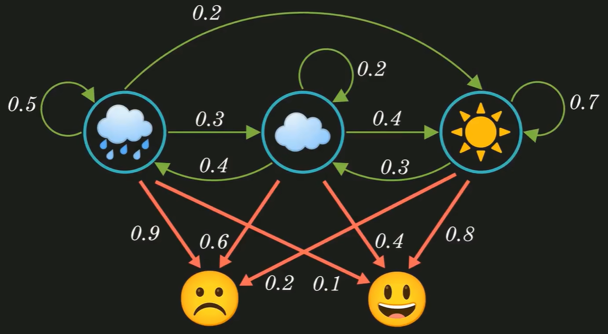
假设一组序列（最终目的是计算多组序列中的概率的最大值）
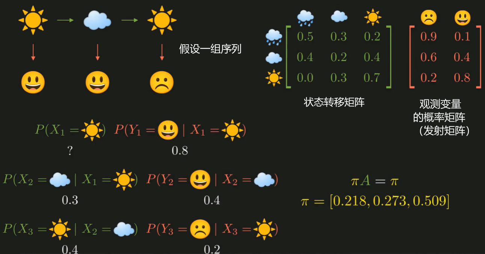
可将该序列计算表示为上述 6 个序列的值，分别来求解；其中的每个值可从右上角矩阵中找到；第一个的概率可通过稳态分布计算；
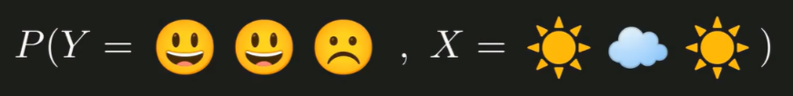
用数学符号表示，观测变量用 Y 来表示，状态变量用 X 来表示；则问题可转换为求解：
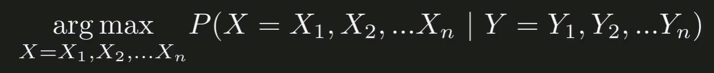
通过朴素贝叶斯来转换计算；
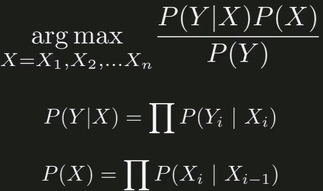
最终转换为求解（忽略分母）：
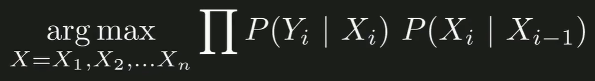
参考学习：
https://www.youtube.com/watch?v=i3AkTO9HLXo&t=1s
https://blog.csdn.net/weixin_39910711/article/details/104585777